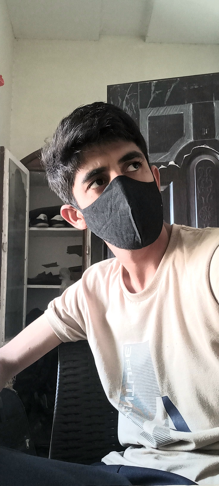

My name is Zafran Khan.My father name is Rahim Shah.I am 18 years old. I am born in non-development village. I did my metriculation from my home town Serai Naurange with 98.73% and got 5th positon in Bise Bunnu Board. After metriculation i wanted to study outside from my home town so I got admission in Oxford Group of School & College which was far away from my home town. I was living there in hostel. I got 485 out of 550 in FSc part 1 and got second position in pre-engineering in college. In FSc, I got 964 out of 1100 and got First position in College. Now I am learning web development from UMT Lahore. Thanks.
